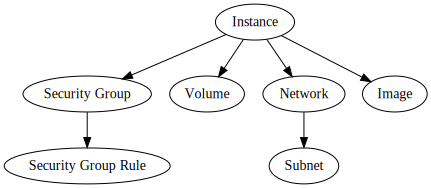

Downpour:
Moving Workloads with Ansible
Ansible Open Source Day, May, 2017
Doug Hellmann, Red Hat
Use Cases
- Moving public <-> private
- Moving between public cloud providers
- Moving between private clouds during upgrades
Our Requirements
- Download all tenant data from one cloud
- Upload it to another cloud
- Retain relationships
- Support multiple OpenStack versions
- Accommodate differences in clouds
Range of Use Cases
| Easy | Moderate | Hard | |
|---|---|---|---|
| Permissions | Operator | Admin | Tenant |
| Backend | Shared storage | Fast interconnect | Shared nothing |
| Applications | One per tenant | Multi-app with naming conventions | Rats nest |
Tenant ACLs
No admin credentials are needed.
Shared Nothing
Works on completely disconnected clouds.
Multi-application Tenant
Export a subset of a tenant's resources.
Trade-offs
- Not a live migration tool.
- The tool does not prevent application disruption.
- Requires full data export & import (copy-on-write benefits lost).
- UUIDs are not preserved.
Multi-phase approach
- Select resources
- Export
- Import
- Cleanup old resources
Review and edit output of each step
downpour query
Untangle distinct applications in a single tenant
$ downpour query --server-name '*demo*' demo/servers.yml
[2017-05-05 18:53:03,180] loading resource list from demo/servers.yml
[2017-05-05 18:53:03,181] searching for servers matching pattern '*demo*'
[2017-05-05 18:53:24,368] found server downpour-demo-tiny to export
$ cat demo/servers.yml
images: []
keypairs: []
servers:
- key_name: downpour-demo
name: downpour-demo-tiny
save_state: false
volumes: []
downpour export
Explicit resources and dependencies
$ downpour export demo/servers.yml demo/export
[2017-05-05 18:58:02,874] loading resource list from demo/servers.yml
[2017-05-05 18:58:05,414] scheduling download of image xenial-server-cloudimg-amd64-disk1
[2017-05-05 18:58:05,434] wrote playbook to demo/export/playbook.yml
[2017-05-05 18:58:05,434] downloading image xenial-server-cloudimg-amd64-disk1
to demo/export/xenial-server-cloudimg-amd64-disk1.dat
100% |######################################| 99.9 MiB/s Time: 0:00:02
[2017-05-05 18:58:13,327] downloaded image xenial-server-cloudimg-amd64-disk1 to
demo/export/xenial-server-cloudimg-amd64-disk1.dat
ansible-playbook
$ ansible-playbook playbook.yml
PLAY [localhost] *********************************************
TASK [Gathering Facts] ***************************************
ok: [localhost]
TASK [Initializing UUID mapping file] ************************
ok: [localhost]
TASK [Add public key downpour-demo] **************************
ok: [localhost]
TASK [Map UUID for keypair downpour-demo] ********************
ok: [localhost]
TASK [Add security group downpour-demo] **********************
ok: [localhost]
TASK [Map UUID for security group downpour-demo] *************
changed: [localhost]
...
Playbook Contents
Dependencies included automatically
CSV File for mapping UUIDs
- name: Add security group downpour-demo
os_security_group:
description: Demo group used for downpour
name: downpour-demo
state: present
register: sg002
- lineinfile:
dest: uuids.csv
insertafter: EOF
line: '"security group","downpour-demo","3c7dcb77-d9ac-4af1-ba95-3f5d89a85227","{{sg002.secgroup.id}}"'
regexp: '"security group","downpour-demo","3c7dcb77-d9ac-4af1-ba95-3f5d89a85227"'
state: present
name: Map UUID for security group downpour-demoPlaybook Contents
Networks and subnets
- name: Create network private
os_network:
external: false
name: private
shared: false
state: present
register: net003
- lineinfile:
dest: uuids.csv
insertafter: EOF
line: '"network","private","56a86bdb-13b2-4c9f-b8f5-a942d52602b5","{{net003.network.id}}"'
regexp: '"network","private","56a86bdb-13b2-4c9f-b8f5-a942d52602b5"'
state: present
name: Map UUID for network privateResource Relationships

Playbook Ordering
- Security group
- Security group rules
- Network
- Subnet
- Volume
- Image
- Instance
Resolver
A Python generator that uses the call stack to serialize the graph
def server(self, server, save_state):
for sg in server.security_groups:
sg_data = self.cloud.get_security_group(sg.name)
yield from self.security_group(sg_data)
vol_names = []
for vol in server.volumes:
vol_data = self.cloud.get_volume(vol.id)
vol_names.append(vol_data.name)
yield from self.volume(vol_data, save_state)
# ...Exporter
The task list is built incrementally
to_export = resources.load(args.resource_file)
tasks = []
for image_info in to_export.images:
image = cloud.get_image(image_info.name)
tasks.extend(res.image(image))
for volume_info in to_export.volumes:
volume = cloud.get_volume(volume_info.name)
tasks.extend(res.volume(volume, save_state=volume_info.save_state))
for server_info in to_export.servers:
server = cloud.get_server(server_info.name)
tasks.extend(res.server(server, save_state=server_info.save_state))Exporter
Before being dumped to YAML
playbook = [
# The default playbook is configured to run instructions
# locally to talk to the cloud API.
{'hosts': 'localhost',
'connection': 'local',
'tasks': tasks,
},
]
playbook_filename = os.path.join(output_path, 'playbook.yml')
with open(playbook_filename, 'w', encoding='utf-8') as fd:
yaml.dump(playbook, fd, default_flow_style=False, explicit_start=True)Resource Types
Supported: public keys, security
groups,
networks & subnets, images, available volumes,
servers
Needs work: attached volumes, floating IPs, routers
Help Wanted!
- More filters for the query tool
- Exporter, especially servers with volumes
- More use cases
- Cleanup tool
- Cinder API to upload/download volume contents
Links
http://git.openstack.org/cgit/openstack/downpour
http://downpour.readthedocs.io/en/latest/

This work is licensed under a Creative
Commons Attribution 4.0 International License.